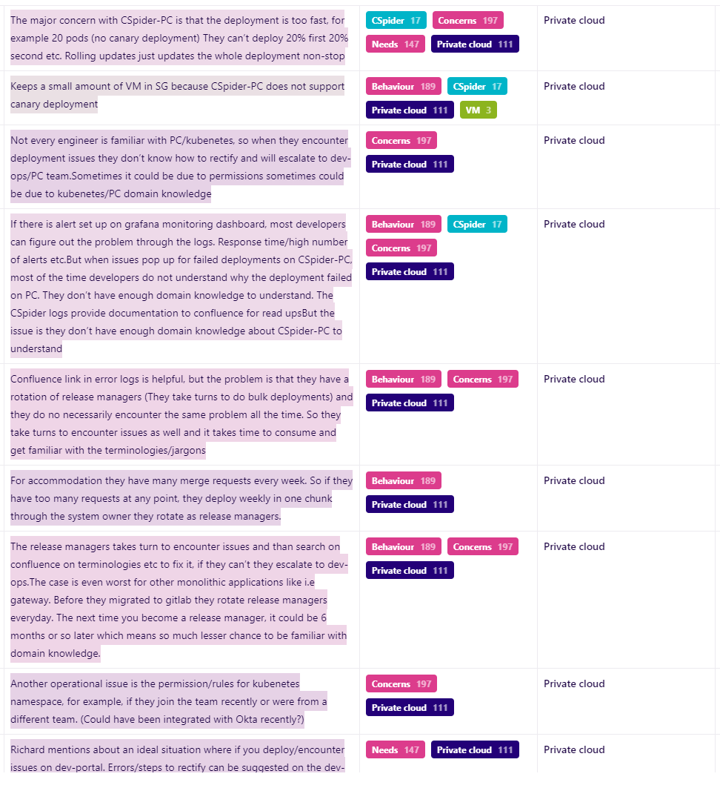
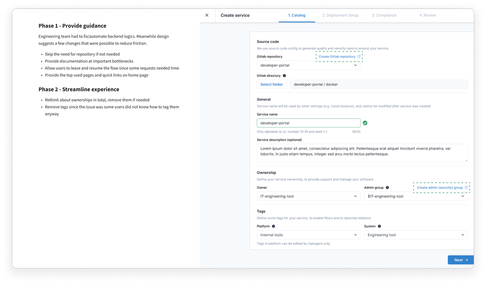
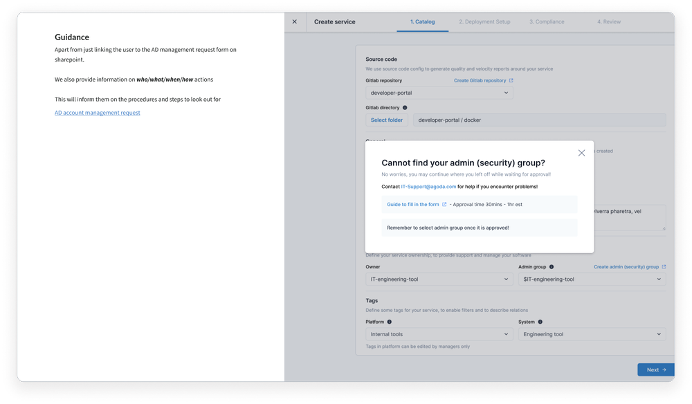
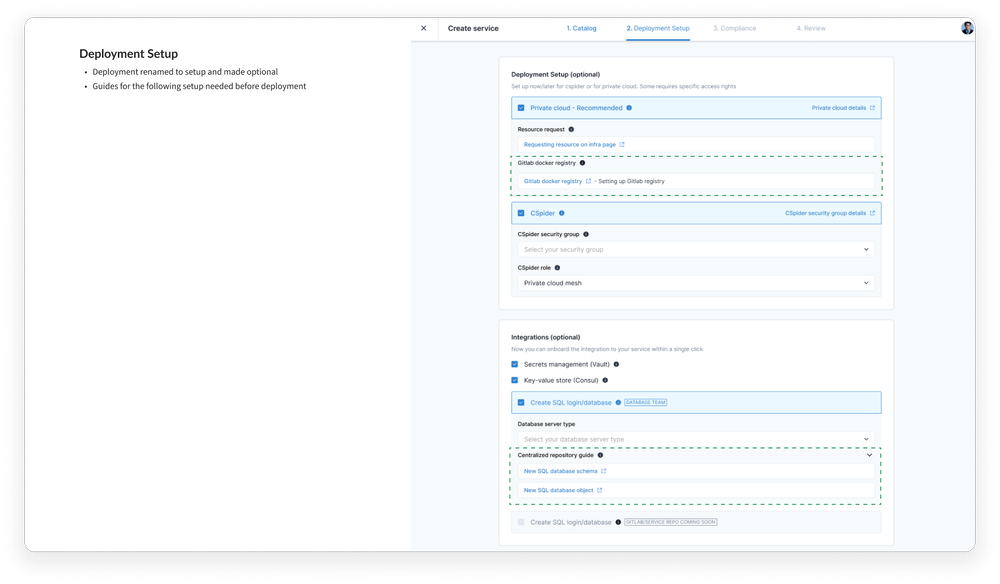

Developer Portal & Deployment
Senior Product Designer · Agoda Engineering
From days
to minutes.
Turning a fragmented engineering platform into a guided path from setup to deployment.
Read the story- Team
- 1 Product Owner, 4–5 Engineers, 1 Frontend Engineer
- Platform
- Web
- Duration
- 3 quarters
A fragmented platform made service creation slow.
Agoda’s internal developer platform was fragmented, slow and unscored. Creating a service took 1–2 working days; deploying to private cloud meant Slack and tribal knowledge. Home was a flat directory of links. Engineers could not find critical paths, and leadership had no System Usability Scale (SUS) baseline to measure whether design helped.
My role
As Senior Product Designer in Agoda Engineering and the first designer in DevOps, I led 0-to-1 design for Developer Portal and Deployment, including domain research, information architecture, interaction and visual design.
Design goals
- Make developer experience measurable.
- Support migration from servers to private cloud.
- Make critical work easier to find.
- Before
- Service creation took 1–2 working days, without a usability baseline.
- The design response
- Task-based navigation, a searchable catalog, in-context guidance and a staged deployment workflow.
Learn the domain. Make the friction measurable.
I combined developer interviews, technical domain learning and a heuristic review to make the work measurable.
The synthesis exposed recurring needs for incremental rollout control, recovery guidance when permissions or terminology blocked progress, and continuity as rotating release managers returned to infrequent workflows.
- Domain immersion
Interviewed 15+ developers and learned Kubernetes, Docker and CI/CD to understand their work.
- Heuristic evaluation
Assessed the platform against Nielsen’s heuristics and documented 47 usability issues.
- Baseline & measure
Established a SUS baseline of 61.9 and repeated the measure every two quarters.
- Ideation & phased delivery
Phase 1: quick wins to unblock developers. Phase 2: fuller automation and approval workflows.

Organize around the work engineers need to do.
Replace the flat link directory with task domains and a searchable catalog: structure developers can learn and the team can measure. Manage, Plan, Build, Secure and Monitor map the development lifecycle; FAQ keeps supporting documentation accessible.
The home page connects services, databases, ownership and integrations; team OKRs; testing and versioning; security; and post-deployment monitoring. Quick links and help stay close to the work.
Static product examples. Names, records and configuration values are illustrative.
Manage the relevant tasks
- Services
- Database
- Ownership
- Team integrations
Manage your team's OKRs
- OKRs
Testing, QA environment and versioning
- Korca (Testing)
- Samsahai (Versioning)
- Linter
Secure your app pre-deployment
- Service security score
- Secbot
- Attack simulator
Post-deployment monitoring
- NOC & SRE
Docs on the SDLC at Agoda
- Documentation
- Developer-portal API
A catalog with ownership and source in view.
The component catalog brings owner, manager, booking impact, source and last commit into one table. My components and All components, alongside label and ownership filters, make this source of truth easier to navigate.
Component
Base catalog of all software units — support channels, system, platform, source, and compliance.
| Name | Owner | Manager | Booking impact | Source | Last commit |
|---|---|---|---|---|---|
| abacus Finance Service | Tax | Josue Martinez | impact > 10% | Gitlab ↗ | 07 Jun 2022 20:22 |
| buckbeak Platform | Payments | Ada Wong | impact > 5% | Gitlab ↗ | 12 Aug 2022 11:04 |
| nginx-edge Infra | SRE | Rob Nadav | — | Gitlab ↗ | 01 Sep 2022 09:18 |
| consul-proxy Internal Tools | DevOps | Sara Lim | impact < 1% | Gitlab ↗ | 19 Oct 2022 16:41 |
Turn a maze into a guided path.
Service creation bundled repository setup, ownership and tags into one dense wizard. Missing admin groups required offline Active Directory (AD) requests. Unclear platform and system tags created ownership problems, and developers left the flow to find documentation or ask for help.
The response separated guidance that could unblock developers while engineering addressed the automation backlog from deeper changes to ownership, tagging and approval workflows.
| Moment | Before | Design response |
|---|---|---|
| Find the starting point | A flat link directory made Create service hard to find without tribal knowledge. | Manage, Plan, Build, Secure and Monitor created a task-based map. |
| Start the form | Repository, ownership and tags appeared upfront, without leave and resume or guidance. | Skip unused repository steps, document bottlenecks and support leave and resume. |
| Resolve ownership | Missing admin groups stopped progress and required an offline AD request. | Preserve progress across long handoffs so developers can return where they stopped. |
| Understand tags | Undocumented platform and system tags caused downstream ownership failures. | Explain ownership and security groups in context; reconsider unnecessary requirements in Phase 2. |
| Recover from blockers | Developers left the wizard to search docs or ask Slack, losing their place. | Bring guidance into the flow and connect it to a searchable catalog of ownership, source and impact. |
| Measure improvement | Service creation took 1–2 working days, without a SUS baseline. | Reported creation time reached 6m 8s; SUS progressed from 61.9 to 68.8. |
Phase 1: provide guidance.
- Skip repository setup when it is not needed.
- Provide documentation at important bottlenecks.
- Allow leave and resume when requests take time.
- Surface top-used pages and quick links on home.
Phase 2: streamline the experience.
- Rethink ownership and remove requirements where unnecessary.
- Reconsider tags developers did not know how to apply.
- Work toward automation and approval workflows beyond immediate fixes.



Make deployment a reviewable decision.
Give developers a productized deployment path and a clear way to move legacy services from servers to private cloud. Environment, Rollout and Review separate configuration, rollout decisions and final confirmation.
1. Configure the environment.
Group environment name and cluster pool, Docker repository and image tag, healthchecks, and CPU and memory requests. Readiness guidance explains startup and liveness probes alongside container configuration.
Container ports
Docker image
Container healthchecks
Readiness, startup and liveness probes
Container resource
Resources per pod
2. Control the rollout.
Canary and Rolling update make the strategy explicit. The canary example progresses through 10%, 20% and 30%, with replica counts and ordering per data center. Monitoring connects the deployment to Slack, a 300-second ramp-up and a 900-second monitoring period.
Deployment strategy
All fields required unless optional
Targets setup
Replicas and order priority per DC
| Targets | Replicas | Order |
|---|---|---|
| HK · Hong Kong | 10 | 1 |
| SG · Singapore | 10 | 2 |
| AM · Amsterdam | 10 | 2 |
| AS · Ashburn | 10 | 2 |
Deployment monitoring
3. Inspect the full configuration.
Review brings repository, image, resources, readiness, rollout strategy, monitoring and targets together before deployment.
devops-safe-app
Environment setup
- Environment name
- staging-mesh
- Cluster Pool
- Mesh
- Repository
- actions/ansible-runner
- Image tag
- 98ds12df · Latest
- CPU / Memory
- 24 Core · 24 Gi
- Readiness
- exec · command abc
Rollout setup
- Strategy
- Canary
- Steps
- 10% → 20% → 30%
- Timeout
- 900 · 15mins
- Slack
- #devops_safe_app
| Targets | Replicas | Order |
|---|---|---|
| HK · Hong Kong | 10 | 1 |
| SG · Singapore | 10 | 2 |
| AM · Amsterdam | 10 | 1 |
Keep the service and its critical actions together.
Restructure information so developers see important work first: clear hierarchy, less noise and critical paths that are easy to find. Service detail brings environments, monitoring and deployment into one place, supported by Catalog, Deployment, Integrations and Security navigation.
Environment, cluster pool, image version, pod health, updater and status sit in one table. Desired, In progress, Pending and Error make the operational state visible. Monitoring, Quick Deploy and New Environment stay close to the service.
abacus FinanceAP-PayoutService
Base catalog of all software units in Agoda — support channels, systems, source, and compliance in one place.
| Environment | Cluster pool | Image version | Pods | Update by | Env status |
|---|---|---|---|---|---|
| buckbeak | mesh | latest | 10/10 | darrell.by… | Desired |
| buckbeak-2 | qa | latest | 20/20 | nic.gwee… | In progress |
| buckbeak_test | stream | 45fd2jnh1 | 15/15 | sara.lim… | Pending |
| default | corp | latest | 8/8 | rob.nad… | Desired |
| nginx | user | latest | 3/4 | ada.wong… | Error |
Try the deployment
walkthrough.
Try environment setup, rollout and review using sample data.
Service creation and usability improved.
- Average service creation · formerly 1–2 days
- 6m 8s
- Final System Usability Scale score
- 68.8
- Reported deployment ease
- 4.4/5
Reported outcomes from the original portfolio across three quarters. The results card rounds creation time to “6 Min”; the narrative gives 6m 8s.
Usability progression
The baseline and follow-up SUS scores were collected every two quarters.
| Measurement | SUS score |
|---|---|
| 22Q4 | 61.9 |
| 23Q2 | 63.4 |
| 23Q4 | 68.8 |
The existing study cites an industry-average SUS of 68 and a future goal of 70+. That goal is not presented as an achieved result. The source does not provide participant counts for SUS or the deployment-ease rating.